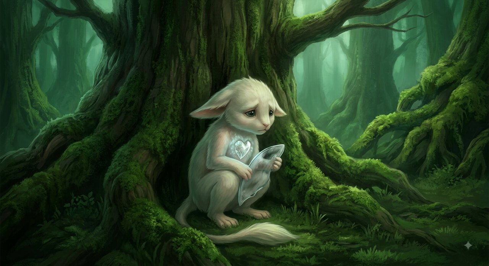
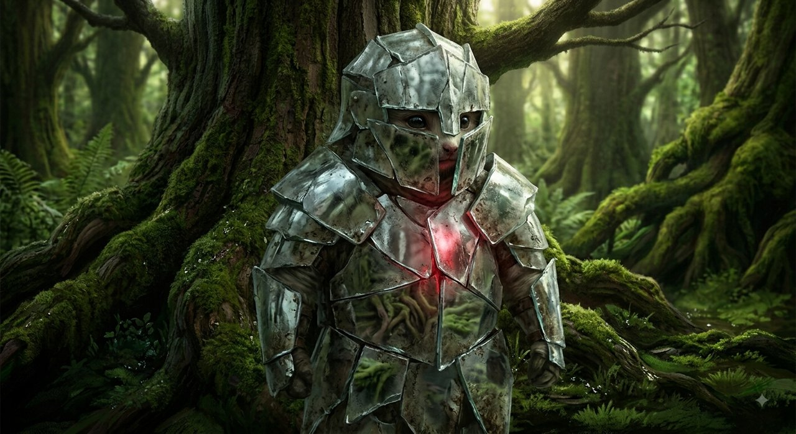
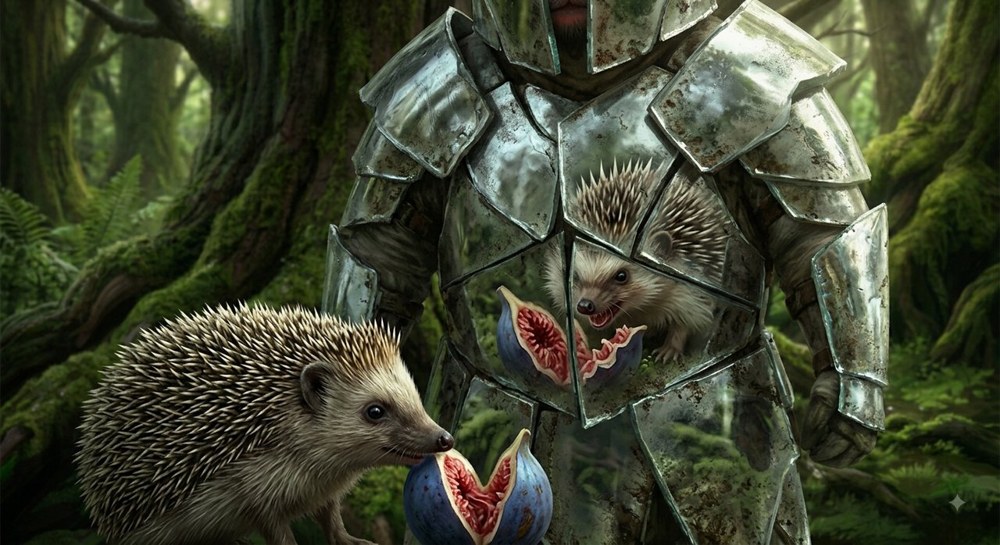
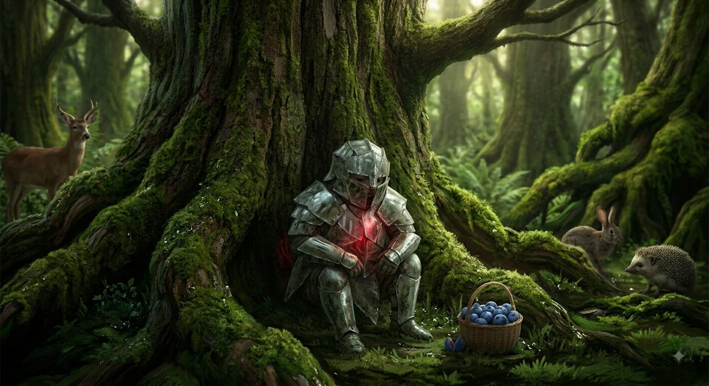
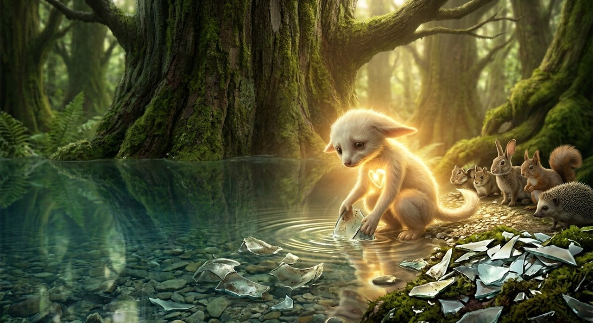
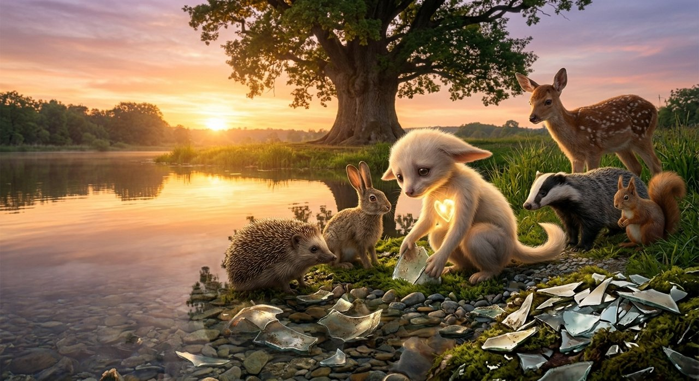

בממלכת עמק האזמרגד, במעמקי יער של עצי אלון עתיקים, חי יצור קטן, עדין ובעל פרווה רכה בשם ליריון. לליריון היה לב עשוי קריסטל דק – הוא הרגיש כל משב רוח בעוצמה של סערה, וכל עלה שנושר נשמע לו כרעם מתגלגל.
אך לליריון היה צל כבד שליווה אותו: הוא האמין בכל ליבו שהוא קטן, פגום, ואינו ראוי לאהבה. משום שחשב כך על עצמו, היה בטוח שכל שאר שוכני היער רואים זאת בדיוק כמוהו – ושכולם, ללא יוצא מן הכלל, זוממים לפגוע בו או ללעוג לו.
המגן שהפך לחומה

כדי להגן על לבו השביר, בנה לעצמו ליריון בגד ייחודי: שריון עשוי שברי מראות עכורות. הוא האמין שהשריון יסנוור את אלו שמביטים בו וישמור עליו מפני חצי הלעג של העולם.
אך המראות של השריון היו מעוותות: כששועל היער הביט לעברו וחייך בטוב לב, ליריון ראה במראות חיוך של לעג וזלזול. כשלהקת הציפורים צייצה בהתרגשות על ענף סמוך, ליריון שמע לחישות מרושעות שזוממות לנדות אותו. כשהקיפוד הציע לו לחלוק פרי עסיסי, ליריון היה בטוח שזהו ניסיון להרעיל אותו או להוכיח לו שהוא חלש מכדי למצוא מזון בעצמו.

בכל פעם שמישהו התקרב, ליריון היה נוהם, זועק על העוול שעושים לו, ומכריז חרם: "אני לא אדבר איתכם לעולם! כולכם אכזריים, כולכם נגדי, ורק אני נשארתי לסבול לבדי בעולם הזה!"
הוא החרים את השועל, נידה את הציפורים, וטרק את דלתו בפני הקיפוד.
בדידות במגדל השקוף
עם הזמן, שוכני היער – שאהבו את ליריון ורצו בקרבתו – ניסו שוב ושוב לשלוח פרחים, מכתבי פיוס ומתנות קטנות אל סף דלתו. אך בכל מחווה ראה ליריון עלבון חדש:
"הם שולחים פרחים כדי להזכיר לי כמה אני מסכן," מלמל לעצמו במרירות. "הם מנסים להשקיט את המצפון הרע שלהם."
בסופו של דבר, עייפו שוכני היער. הכאב על כך שכל כוונה טובה שלהם מתפרשת כפגיעה זדונית הפך למעמסה כבדה מדי. הם החלו להתרחק, צועדים בשקט סביב ביתו כדי לא לעורר את זעמו.

ליריון ישב בתוך ביתו החשוך, עטוף בשריון המראות הכבד, והביט בחלון. כשראה את היער הריק סביבו, זלגו דמעות חמות על לחייו:
"ידעתי," לחש בכאב צורב. "ידעתי שכולם שונאים אותי. תראו איך הם נידו אותי והשאירו אותי לבד בעולם. כולם נגדי, ואני הקורבן המסכן של כולם."
זקן הינשופים והמעיין הצלול
יום אחד, נחת על אדן חלונו של ליריון ינשוף זקן וחכם, בעל עיניים עמוקות כמו הלילה. ליריון מיד כיווץ את גבותיו וצעק: "באת גם אתה לנעוץ בי מבט מתנשא ולפגוע בי?!"
הינשוף לא נסוג ולא כעס. הוא רק אמר בקול שקט: "ליריון היקר, השריון שאתה לובש כבד כל כך. בוא איתי אל מעיין האמת שבפסגת ההר. אם המעיין יראה שכולם אכן שונאים אותך, אני אשאר כאן להגן עליך לעולם."
ליריון, שרצה להוכיח לינשוף כמה הוא צודק וכמה כולם אשמים במצבו, הלך אחריו.
כשהגיעו לפסגה, עמד ליריון מעל מי המעיין הצלולים ביותר בממלכה. הוא הביט במים כדי לראות את דמותו המסכנה והמנודה, אך ראה רק את שברי המראות העכורות של שריונו, שהחזירו אליו אינספור השתקפויות של פניו שלו – זועמות, מפוחדות ומלאות סבל.
"הורד את השריון לרגע אחד, ליריון," אמר הינשוף בעדינות. "הבט במים ללא המראות שלך."

בידיים רועדות, התיר ליריון את הרצועות והשיל את שריון המראות הכבד. הוא רכן מעל המים. במקום מפלצות או אויבים, הוא ראה יצור עדין ובעל עיניים יפות, אך פצוע עמוק בפנים. וכשהביט סביבו ללא המראות המעוותות, ראה לפתע את שביל היער: הוא ראה את הקיפוד שהשאיר ליד הדלת סלסילת תותים טריים מתוך דאגה; הוא ראה את הציפורים ששרו שיר געגועים; והוא הבין שהשועל רק ניסה לחייך אליו בחיבה.
"אף אחד לא שנא אותך, ליריון," לחש הינשוף. "האויב היחיד שרדף אותך היה המחשבה שאינך ראוי לאהבה. משום שלא האמנת בערך של עצמך, הפכת כל יד שהושטה לעברך לאגרוף, וכל חיוך ללעג. אתה החרמת את העולם שרק רצה לחבק אותך."
הריפוי של הלב
באותו רגע, נשבר משהו בלבו של ליריון – לא משבר של כאב, אלא שחרור עמוק. הוא השאיר את שריון המראות על פסגת ההר, וירד אל העמק בפרוותו החשופה והפגיעה.
כשהגיע לעמק, הוא לא דרש הגנה, ולא האשים אף אחד. הוא פשוט פתח את דלתו, הביט בשכניו ואמר: "טעיתי. הכאב שלי גרם לי לראות בכם אויבים, בזמן שאתם הייתם המשפחה שרק רצתה בטובתי."

וביער האזמרגד, אף אחד לא זכר לו את העבר. הם פשוט קיבלו אותו בחזרה, משום שתמיד – לאורך כל הדרך – הם רק חיכו שהוא יסכים להירפא מהפחד של עצמו.
כשאדם שבוי בדימוי עצמי נמוך וברגישות יתר, הוא הופך את עצמו למוקד של עולם עוין שאינו קיים במציאות. מי שמפרש כל תנועה כפגיעה וכל אדם כאויב, גוזר על עצמו בידוד ומרירות – ומשכנע את עצמו שהוא קורבן של העולם, בעוד שלמעשה הוא שבוי של פחדיו שלו.